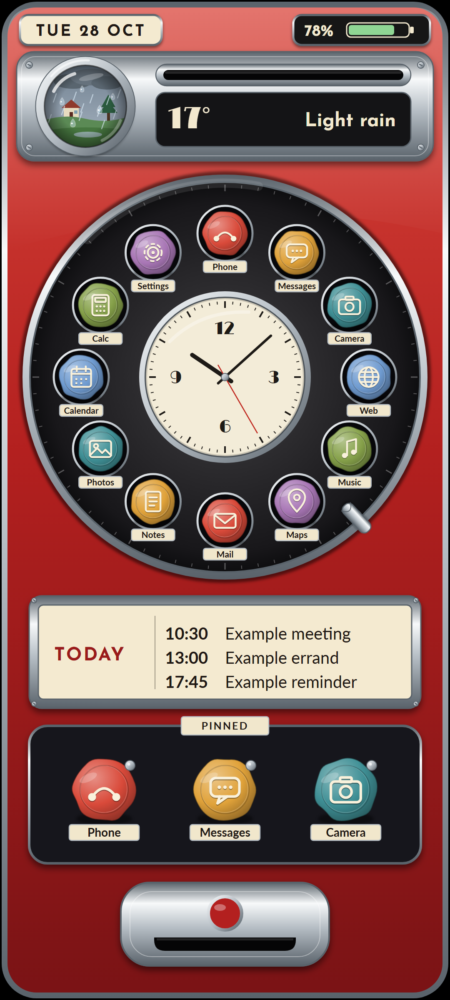
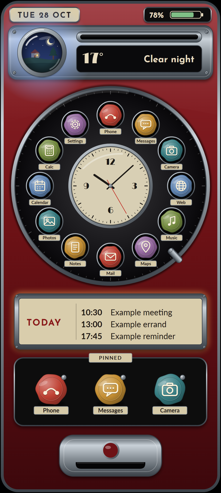
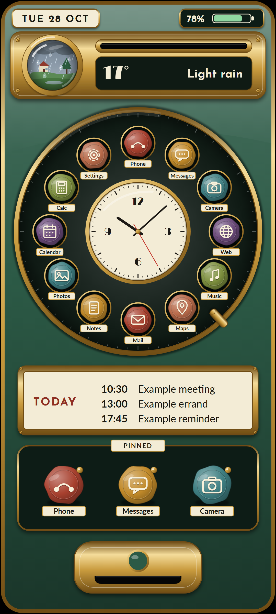
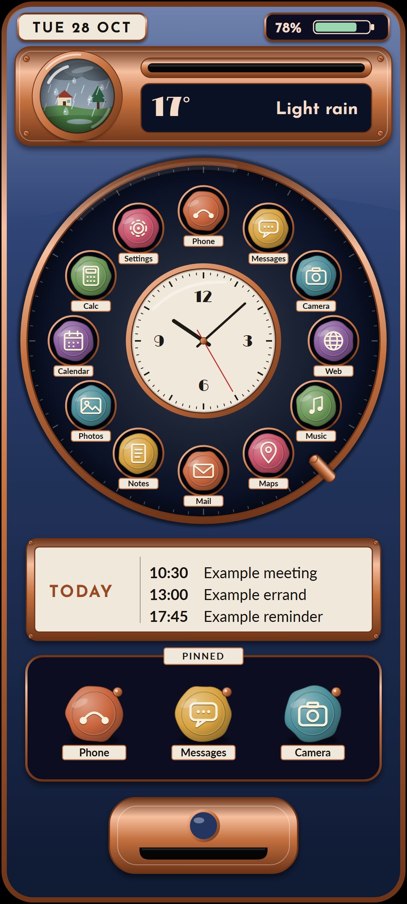
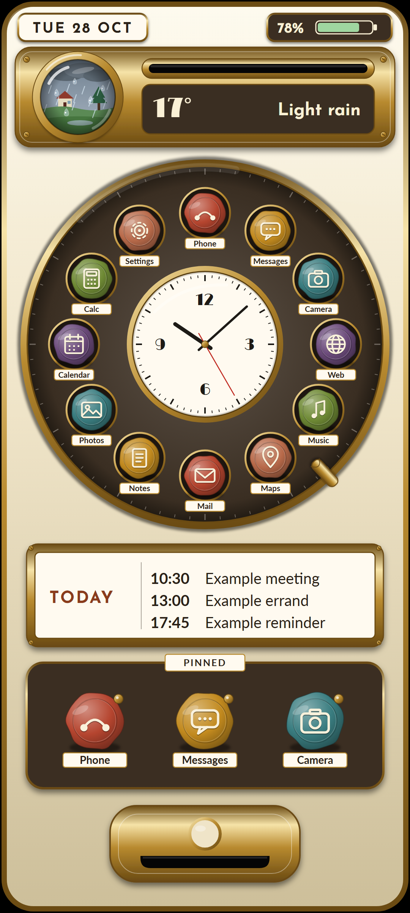
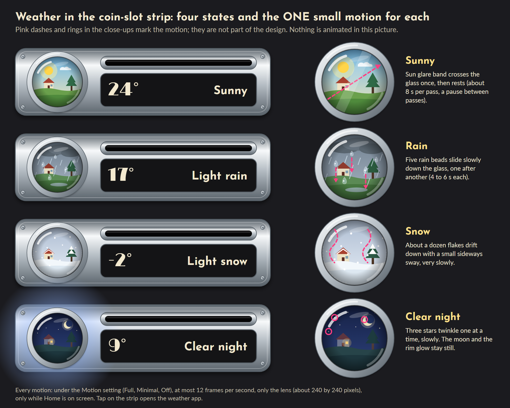
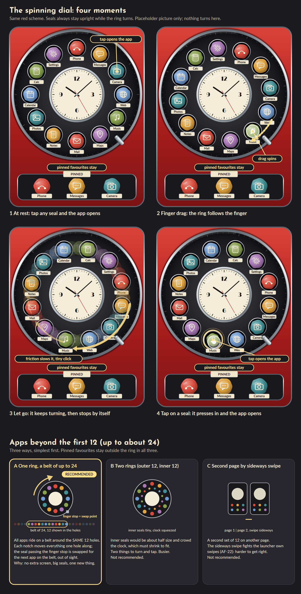

Payphone handheld (round 3): all pictures side by side
Home in four colour schemes (red also at night), the spinning dial storyboard and the four weather states. Pictures only; nothing ran on the phone.

1 Red lacquer, day

1 Red lacquer, night

2 Forest green, ivory

3 Midnight blue, copper

4 Cream and brass

Weather lens: four states, one small motion each

Spinning dial storyboard and apps beyond 12